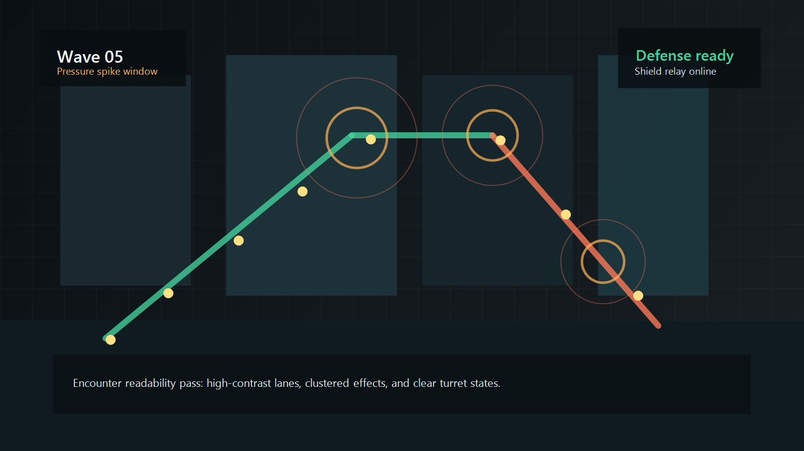
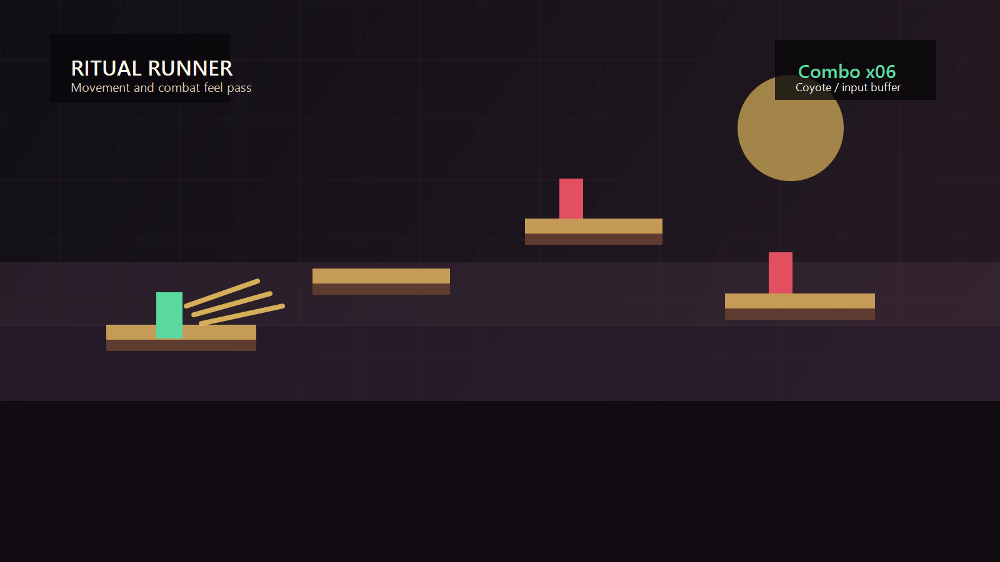
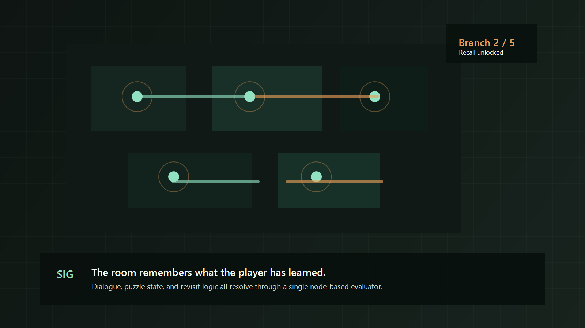

Role fit
Unity gameplay and generalist programming
Unity, C#, combat feel, encounter pacing, UI feedback, AI behavior, and iteration tools.
Entry-level Unity game developer
This is a live portfolio build for my game development work. Right now it uses polished sample case studies to establish the structure, presentation, and pacing of the final site. Real shipped, school, and jam projects will replace these sections as the portfolio is finalized.
Current version: real website structure, sample project content.
Role fit
Unity, C#, combat feel, encounter pacing, UI feedback, AI behavior, and iteration tools.
Best project
This homepage currently highlights one sample flagship project and two supporting samples to prove out the final portfolio structure.
Reach me
Professional email, live project links, and final contact details will be added when the real portfolio content is ready.
Selected work

Sample flagship project
A Unity tactics-defense prototype about rerouting enemy pressure across a rooftop city block while keeping every decision readable at a glance.

Sample supporting project
A fast 2D action platformer focused on movement feel, responsive combat timing, and strong player feedback under jam-scale constraints.

Sample supporting project
A narrative puzzle exploration project that leans on stable state tracking, interaction UI, and writer-friendly debugging tools.
Skills
Unity, C#, ScriptableObjects, Cinemachine, Git, rapid prototyping, build cleanup, debug tooling.
Combat feel, enemy AI, state-driven systems, interaction loops, pacing passes, difficulty tuning, onboarding clarity.
Playtest-driven iteration, readable handoff notes, scoped milestone planning, and pairing technical decisions with player-facing feedback.
About this build
The goal right now is to get a real personal domain live with a clean structure, strong visual rhythm, and recruiter-friendly information hierarchy. That way the final portfolio can focus on replacing sections with real projects instead of redesigning the site from scratch.
Every sample section on this site is standing in for future case studies, real screenshots, actual GitHub or itch links, and production-ready contact details.
Next step